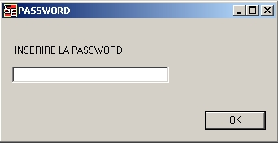
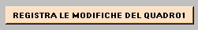
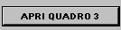

Le
impostazioni permettono di modificare le caratteristiche dei quadri e
delle tabelle di calcolo. Per accedere al pannello delle impostazioni
e' necessario possedere una password di ammimistratore del software

Le modifiche delle caratteristiche diventano attive solamente dopo che e' stato premuto il pulsante di registrazione 
Per verificare l'avvenuta modifica aprire il quadro o la tabella con il tasto corrispondente